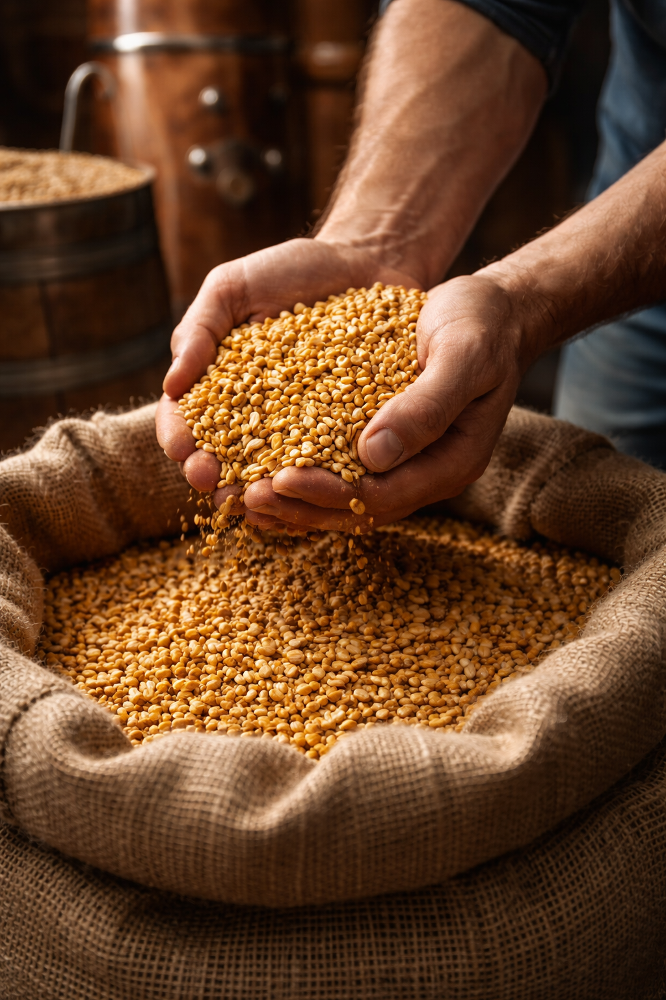
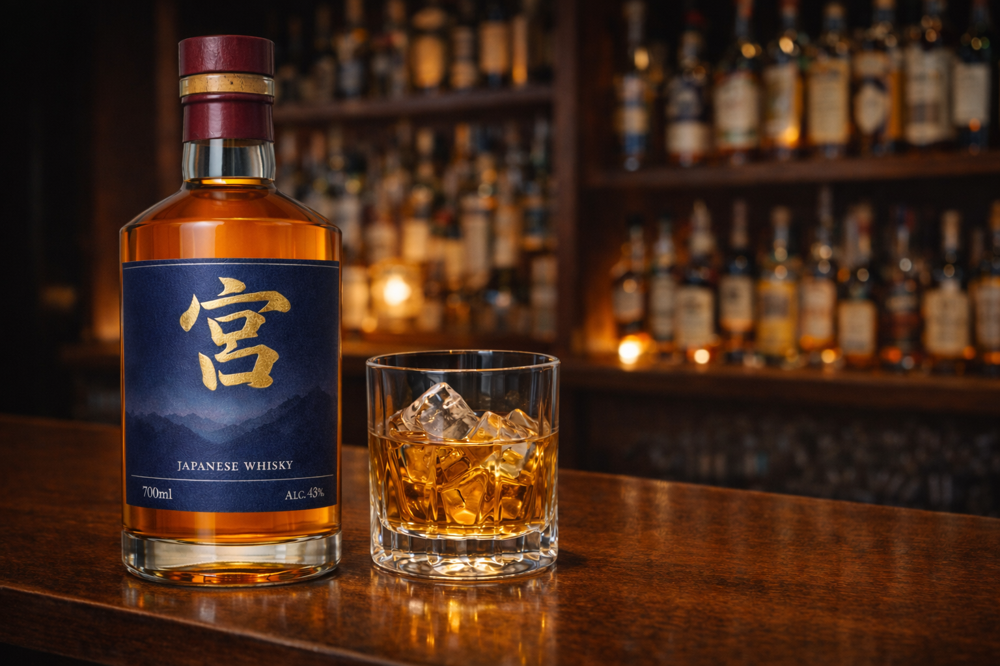
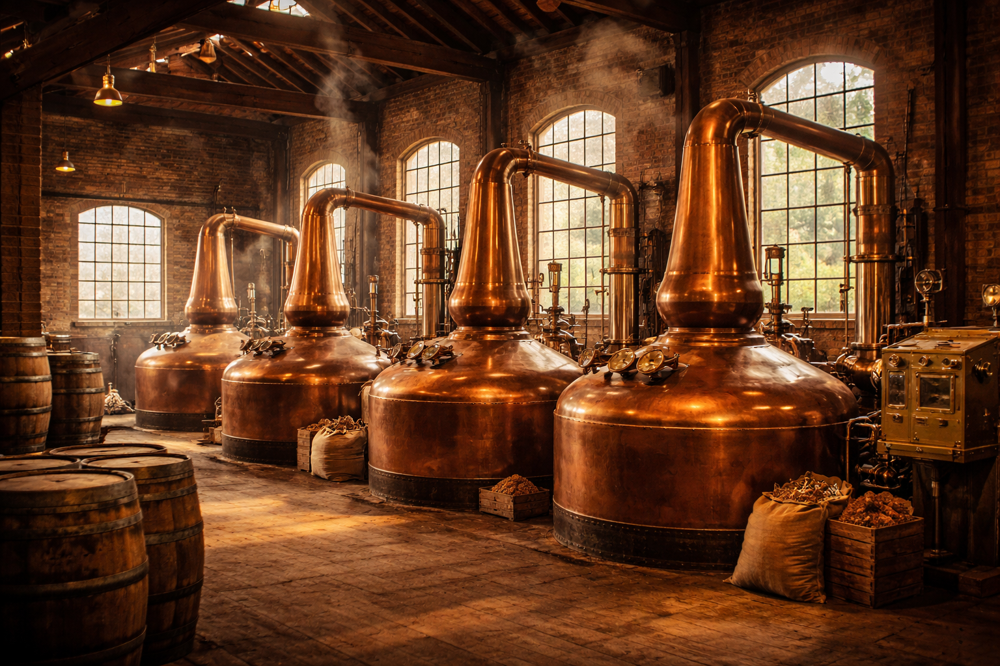
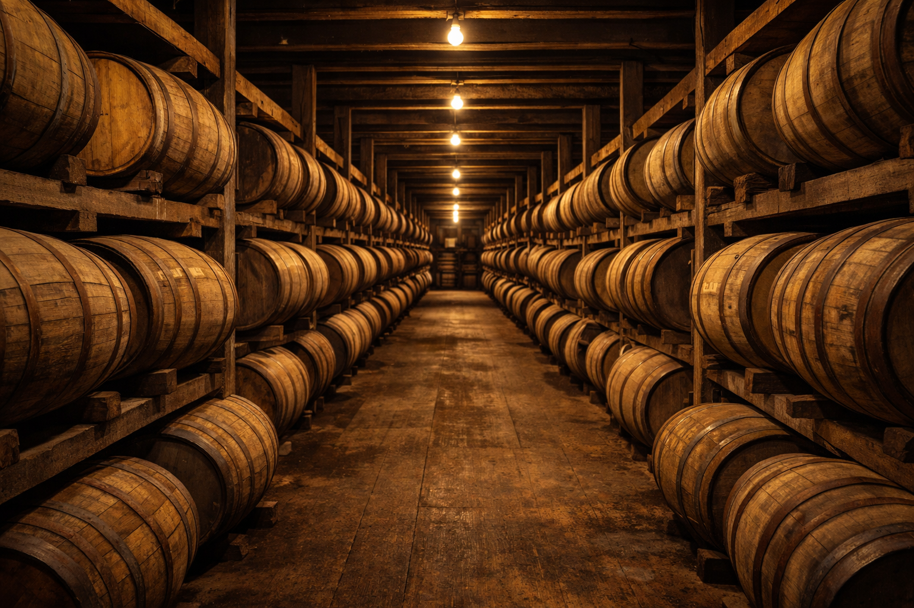
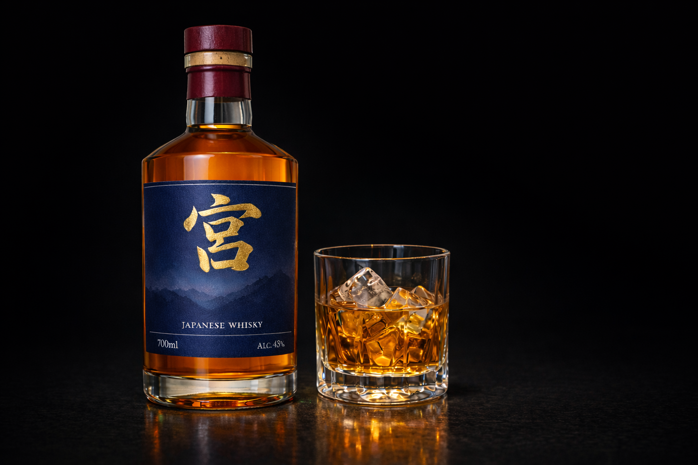
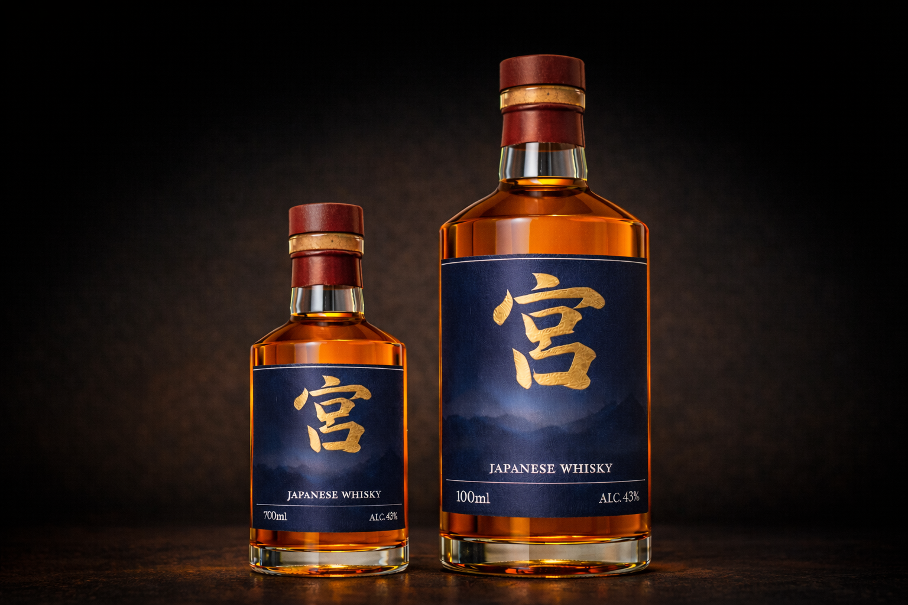
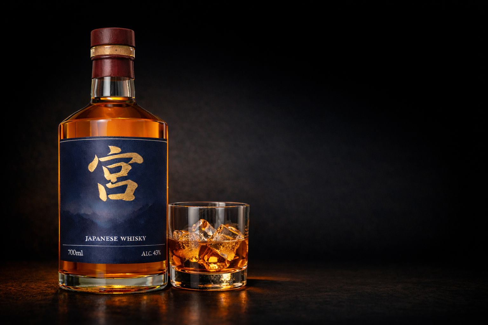

原材料へのこだわり
主原料には、バーボンの規定である51％以上のトウモロコシを使用。ライ麦や大麦麦芽をバランスよく組み合わせ、甘味とコクを引き出しています。 新品の内側を焦がしたオーク樽で熟成することで、バニラのような甘い香りが加わります。

ウイスキー『宮』
グラスに注いだ瞬間、ふわりと立ち上る深く甘い香り。
ひと口含めば、バニラやキャラメルを思わせる濃厚な甘味と、
しっかりとしたオークの余韻が広がる。
それは、王道を極めたバーボンウイスキー。
しかも、数あるバーボンの中でも特に“バーボンらしさ”が際立つ一本です。
力強い樽香、芯のあるコク、連れて行くような甘さ。その個性は、
ストレートでもロックでも、ハイボールでも揺るぎません。

主原料には、バーボンの規定である51％以上のトウモロコシを使用。ライ麦や大麦麦芽をバランスよく組み合わせ、甘味とコクを引き出しています。 新品の内側を焦がしたオーク樽で熟成することで、バニラのような甘い香りが加わります。

香ばしい穀物の甘みと、力強くもまろやかなコク。一滴が生まれるまで、職人の繊細な感覚が息づいています。 温度を細かく調整し、旨味と香りが最も美しく現れる“中心の一滴”だけを選び取ります。

穀物のデンプンを糖へと変えた後、酵母を加えて発酵。連続式蒸溜機で蒸溜し、穀物由来の甘味を残します。 強く焦がしたオーク樽の中で熟成させ、深い琥珀色とキャラメルのような香りを引き出します。

30代からの大人の時間に寄り添う、手ごろな価格のバーボン。気取らず楽しめるのに、しっかりとした大人の雰囲気が広がります。 日常を少しだけ特別にしたい夜にぴったりの一本です。

